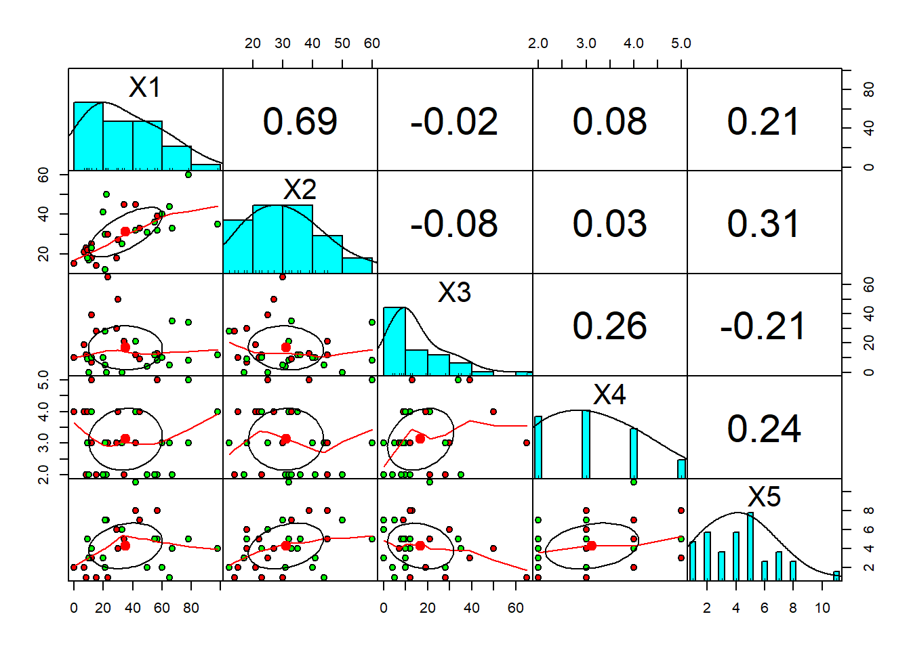
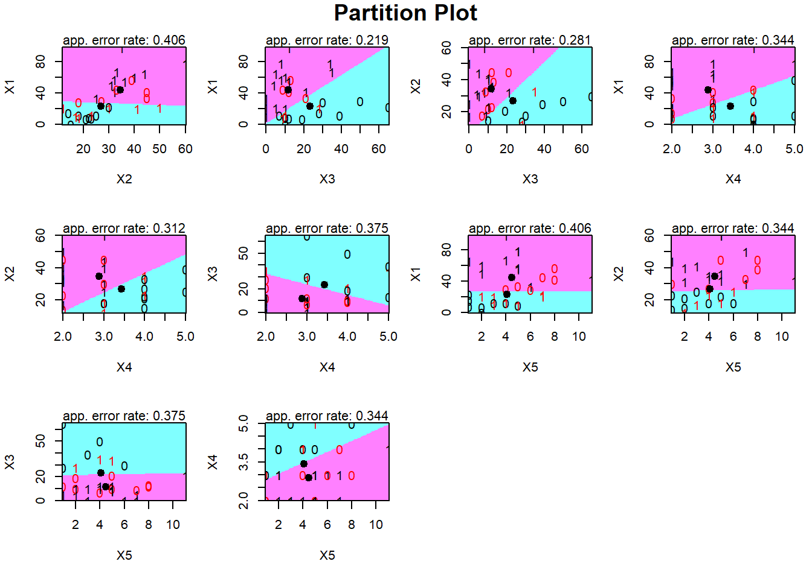
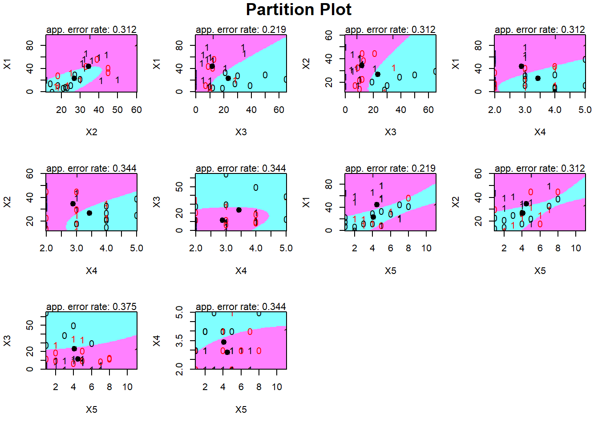

Chapter 4 Discriminant Analysis
4.1 Analisis Diskriminan Dua Grup
4.1.1 Data
library(readxl)
pinjaman <- read_excel("Data/pinjaman.xlsx")
head(pinjaman,10)
#> # A tibble: 10 × 6
#> X1 X2 X3 X4 X5 Y
#> <dbl> <dbl> <dbl> <dbl> <dbl> <dbl>
#> 1 98 35 12 4 4 1
#> 2 65 44 5 3 1 1
#> 3 22 50 0 2 7 1
#> 4 78 60 34 5 5 1
#> 5 50 31 4 2 2 1
#> 6 21 30 5 3 7 1
#> 7 42 32 21 4 11 1
#> 8 20 41 10 2 3 1
#> 9 33 25 0 3 6 1
#> 10 57 32 8 2 5 1str(pinjaman)
#> tibble [32 × 6] (S3: tbl_df/tbl/data.frame)
#> $ X1: num [1:32] 98 65 22 78 50 21 42 20 33 57 ...
#> $ X2: num [1:32] 35 44 50 60 31 30 32 41 25 32 ...
#> $ X3: num [1:32] 12 5 0 34 4 5 21 10 0 8 ...
#> $ X4: num [1:32] 4 3 2 5 2 3 4 2 3 2 ...
#> $ X5: num [1:32] 4 1 7 5 2 7 11 3 6 5 ...
#> $ Y : num [1:32] 1 1 1 1 1 1 1 1 1 1 ...pinjaman$Y <- as.factor(pinjaman$Y)
str(pinjaman)
#> tibble [32 × 6] (S3: tbl_df/tbl/data.frame)
#> $ X1: num [1:32] 98 65 22 78 50 21 42 20 33 57 ...
#> $ X2: num [1:32] 35 44 50 60 31 30 32 41 25 32 ...
#> $ X3: num [1:32] 12 5 0 34 4 5 21 10 0 8 ...
#> $ X4: num [1:32] 4 3 2 5 2 3 4 2 3 2 ...
#> $ X5: num [1:32] 4 1 7 5 2 7 11 3 6 5 ...
#> $ Y : Factor w/ 2 levels "0","1": 2 2 2 2 2 2 2 2 2 2 ...
4.1.2 Pemodelan Linier
library(MASS)
modellda1 <- lda(Y ~ X1 + X2 + X3 + X4 + X5, data=pinjaman)
modellda1
#> Call:
#> lda(Y ~ X1 + X2 + X3 + X4 + X5, data = pinjaman)
#>
#> Prior probabilities of groups:
#> 0 1
#> 0.4375 0.5625
#>
#> Group means:
#> X1 X2 X3 X4 X5
#> 0 23.07143 26.78571 23.21429 3.428571 4.071429
#> 1 44.33333 34.38889 11.72222 2.888889 4.500000
#>
#> Coefficients of linear discriminants:
#> LD1
#> X1 0.037015853
#> X2 -0.004820049
#> X3 -0.043555291
#> X4 -0.477408359
#> X5 -0.0084838364.1.4 Akurasi

library(caret)
#> Loading required package: ggplot2
#> Warning: package 'ggplot2' was built under R version 4.4.3
#>
#> Attaching package: 'ggplot2'
#> The following objects are masked from 'package:psych':
#>
#> %+%, alpha
#> Loading required package: lattice
confusionMatrix(p$class,pinjaman$Y)
#> Confusion Matrix and Statistics
#>
#> Reference
#> Prediction 0 1
#> 0 9 4
#> 1 5 14
#>
#> Accuracy : 0.7188
#> 95% CI : (0.5325, 0.8625)
#> No Information Rate : 0.5625
#> P-Value [Acc > NIR] : 0.0523
#>
#> Kappa : 0.424
#>
#> Mcnemar's Test P-Value : 1.0000
#>
#> Sensitivity : 0.6429
#> Specificity : 0.7778
#> Pos Pred Value : 0.6923
#> Neg Pred Value : 0.7368
#> Prevalence : 0.4375
#> Detection Rate : 0.2812
#> Detection Prevalence : 0.4062
#> Balanced Accuracy : 0.7103
#>
#> 'Positive' Class : 0
#> #install.packages("klaR")
library(klaR)
#> Warning: package 'klaR' was built under R version 4.4.3
#Partition plot
partimat(Y~., data = pinjaman, method = "lda")

4.1.5 Pemodelan Quadratik
modellda2 <- qda(Y ~ X1 + X2 + X3 + X4 + X5, data=pinjaman)
modellda2
#> Call:
#> qda(Y ~ X1 + X2 + X3 + X4 + X5, data = pinjaman)
#>
#> Prior probabilities of groups:
#> 0 1
#> 0.4375 0.5625
#>
#> Group means:
#> X1 X2 X3 X4 X5
#> 0 23.07143 26.78571 23.21429 3.428571 4.071429
#> 1 44.33333 34.38889 11.72222 2.888889 4.5000004.1.6 Tipe Diskriminan Lainnya
# Mixture discriminant analysis - MDA
# install.packages("mda")
library(mda)
#> Warning: package 'mda' was built under R version 4.4.3
#> Loading required package: class
#> Loaded mda 0.5-5
modellda3 <- mda(Y ~ X1 + X2 + X3 + X4 + X5, data=pinjaman)
p <- predict(modellda3, pinjaman)
mean(p==pinjaman$Y)
#> [1] 0.843754.2 Analisis Diskriminan Tiga Grup
4.2.1 Data
data("iris")
head(iris)
#> Sepal.Length Sepal.Width Petal.Length Petal.Width Species
#> 1 5.1 3.5 1.4 0.2 setosa
#> 2 4.9 3.0 1.4 0.2 setosa
#> 3 4.7 3.2 1.3 0.2 setosa
#> 4 4.6 3.1 1.5 0.2 setosa
#> 5 5.0 3.6 1.4 0.2 setosa
#> 6 5.4 3.9 1.7 0.4 setosastr(iris)
#> 'data.frame': 150 obs. of 5 variables:
#> $ Sepal.Length: num 5.1 4.9 4.7 4.6 5 5.4 4.6 5 4.4 4.9 ...
#> $ Sepal.Width : num 3.5 3 3.2 3.1 3.6 3.9 3.4 3.4 2.9 3.1 ...
#> $ Petal.Length: num 1.4 1.4 1.3 1.5 1.4 1.7 1.4 1.5 1.4 1.5 ...
#> $ Petal.Width : num 0.2 0.2 0.2 0.2 0.2 0.4 0.3 0.2 0.2 0.1 ...
#> $ Species : Factor w/ 3 levels "setosa","versicolor",..: 1 1 1 1 1 1 1 1 1 1 ...library(MASS)
lda.iris <- lda(Species ~ ., iris)
lda.iris
#> Call:
#> lda(Species ~ ., data = iris)
#>
#> Prior probabilities of groups:
#> setosa versicolor virginica
#> 0.3333333 0.3333333 0.3333333
#>
#> Group means:
#> Sepal.Length Sepal.Width Petal.Length
#> setosa 5.006 3.428 1.462
#> versicolor 5.936 2.770 4.260
#> virginica 6.588 2.974 5.552
#> Petal.Width
#> setosa 0.246
#> versicolor 1.326
#> virginica 2.026
#>
#> Coefficients of linear discriminants:
#> LD1 LD2
#> Sepal.Length 0.8293776 -0.02410215
#> Sepal.Width 1.5344731 -2.16452123
#> Petal.Length -2.2012117 0.93192121
#> Petal.Width -2.8104603 -2.83918785
#>
#> Proportion of trace:
#> LD1 LD2
#> 0.9912 0.00884.2.2 Uji Signifikansi Fungsi Diskriminan
m <- manova(cbind(iris$Sepal.Length,iris$Sepal.Width,iris$Petal.Length,
iris$Petal.Width) ~ iris$Species)
summary(m, test = 'Wilks')
#> Df Wilks approx F num Df den Df Pr(>F)
#> iris$Species 2 0.023439 199.15 8 288 < 2.2e-16
#> Residuals 147
#>
#> iris$Species ***
#> Residuals
#> ---
#> Signif. codes:
#> 0 '***' 0.001 '**' 0.01 '*' 0.05 '.' 0.1 ' ' 14.2.3 Akurasi

4.2.4 Visualisasi
library(ggplot2)
lda.data <- cbind(iris, p$x)
ggplot(lda.data, aes(LD1, LD2)) +
geom_point(aes(color = Species)) + theme_classic()
4.2.5 Pemodelan Quadratik
qda.iris <- qda(Species ~ ., data=iris)
qda.iris
#> Call:
#> qda(Species ~ ., data = iris)
#>
#> Prior probabilities of groups:
#> setosa versicolor virginica
#> 0.3333333 0.3333333 0.3333333
#>
#> Group means:
#> Sepal.Length Sepal.Width Petal.Length
#> setosa 5.006 3.428 1.462
#> versicolor 5.936 2.770 4.260
#> virginica 6.588 2.974 5.552
#> Petal.Width
#> setosa 0.246
#> versicolor 1.326
#> virginica 2.026
p <- predict(qda.iris, iris)
mean(p$class==iris$Species)
#> [1] 0.984.2.6 Tipe Diskriminan Lainnya
# Mixture discriminant analysis - MDA
# install.packages("mda")
library(mda)
mda.iris <- mda(Species ~ ., data=iris)
mda.iris
#> Call:
#> mda(formula = Species ~ ., data = iris)
#>
#> Dimension: 4
#>
#> Percent Between-Group Variance Explained:
#> v1 v2 v3 v4
#> 95.26 97.78 99.56 100.00
#>
#> Degrees of Freedom (per dimension): 5
#>
#> Training Misclassification Error: 0.01333 ( N = 150 )
#>
#> Deviance: 13.229
p <- predict(mda.iris, iris)
mean(p==iris$Species)
#> [1] 0.9866667# Flexible discriminant analysis - FDA
fda.iris <- fda(Species ~ ., data=iris)
fda.iris
#> Call:
#> fda(formula = Species ~ ., data = iris)
#>
#> Dimension: 2
#>
#> Percent Between-Group Variance Explained:
#> v1 v2
#> 99.12 100.00
#>
#> Degrees of Freedom (per dimension): 5
#>
#> Training Misclassification Error: 0.02 ( N = 150 )
p <- predict(fda.iris, iris)
mean(p==iris$Species)
#> [1] 0.98# Regularized discriminant analysis - RDA
rda.iris <- rda(Species ~ ., data=iris)
rda.iris
#> Call:
#> rda(formula = Species ~ ., data = iris)
#>
#> Regularization parameters:
#> gamma lambda
#> 0.1678610 0.4041377
#>
#> Prior probabilities of groups:
#> setosa versicolor virginica
#> 0.3333333 0.3333333 0.3333333
#>
#> Misclassification rate:
#> apparent: 2 %
#> cross-validated: 2 %
p <- predict(rda.iris, iris)
mean(p$class==iris$Species)
#> [1] 0.98